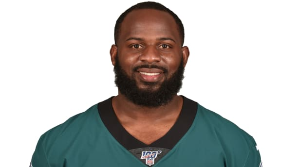

Fletcher Cox
Biography:
One of the NFL's best defensive players, Fletcher Cox was originally selected by the Eagles with the 12th overall pick in the 2012 NFL Draft. A five-time Pro Bowl and four-time All-Pro honoree, Cox has produced 48.0 career sacks (career-high 10.5 sacks in 2018), which are the most by an interior DL in team history (seventh-most overall).